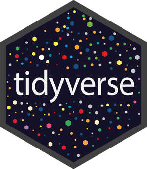

Code
install.packages("ggplot2")
library(ggplot2)Welcome to the ggplot2 field manual! This manual intends to be a bookmark/quick reference for building graphs with ggplot2 (even if you can’t quite recall what that graph was called).

This manual was written to help answer questions like,
“What graph should I use?”
“Can I build this graph (given the data I have)?”
What was the name of that visualization I saw on #TidyTuesday?
The code and examples assume the reader has already answered the question, “what kind of data do I have?”
If not, I highly recommend the skimr and inspectdf packages for getting to know your data better.
Another question to consider–but is not covered in this manual–is, “who will the audience be for this graph?” Great resources for this include Communicating with Data: The Art of Writing for Data Science by Deborah Nolan and Sara Stoudt and Truthful Art, The: Data, Charts, and Maps for Communication, by Alberto Cairo.
I created this resource with the following learner personas in mind:
Garth is a data analyst putting together a slide deck for an upcoming meeting. He had a few statistics courses with R in college, and has picked up additional experience and skills from the different positions he’s held and various online tutorials. He’s currently building the graphs in his slides with ggplot2, but had grown tired of them and would like to customize his presentation to make it more engaging.
Matilda is a data journalist hoping to add a few graphs to a piece she has been working on. She has 10 years of experience working with WordPress, writes and publishes on her own blog, and has an intermediate understanding of HTML & CSS. However, she has only been programming in R for about 6 months.
Igor is a researcher who has been working in academia for 15 years. He’s comfortable writing R code, knows the kinds of graphs he’d like to build, but he only knows how to build these using the base R graphics. He’d like to learn how to duplicate the graphs he’s already created in base R using ggplot2.
Because this is intended to be a field manual (and not a textbook), I’ve omitted most of the underlying principles and structure of the ggplot2 syntax.
If you’re looking for a comprehensive resource on ggplot2, I recommend the excellent free text, the ggplot2 website, and Data Visualization: a practical guide by Kieran Healy.
If you know the graph you’d like to build, and you’re just looking for the code or package(s) to build it, I’d check out the R graph gallery or R graphics cookbook.
Graphs have been categorized into the following types:
Univariate: if you have a single column you’re trying to visualize
Amounts: counts or simple summary statistics of one or two columns in a dataset
Proportions: ratio displays of part-to-whole
Distributions: displaying the shape of a variable’s values (normalcy, skewness, kurtosis, etc.)
Relationships: how does the change of values in variable x affect the values in variable y (and possibly z)?
Some graphs can justifiably belong to more than one category, and wherever this is the case, I’ve tried to include links to other applications in the notes.
Install ggplot2 using the code below:
install.packages("ggplot2")
library(ggplot2)Or you can install ggplot2 as part of the tidyverse:

install.packages("tidyverse")
library(tidyverse)The majority of the graphs in the manual are built using the palmerpenguins::penguins data.
…so…many…PENGUINS!

install.packages("palmerpenguins")
library(palmerpenguins)Some of the graphs use datasets from the fivethirtyeight package.
install.packages("fivethirtyeight")
library(fivethirtyeight)A few of the graphs are built using the ggplot2movies::movies data.
install.packages("ggplot2movies")
library(ggplot2movies)Why not manually create the graph datasets with data.frame() or tibble()/tribble()?
In my opinion, using manually generated data is great for reproducible examples, but they rarely look like data ‘caught in the wild.’ The data packages above are also well maintained and can be used to provide a variety of examples.
The field manual follows a Rule of Least Power Principle, in the sense that “a language with a straightforward syntax may be easier to analyze than an otherwise equivalent one with more complex structure.”
In other words, assuming the reader has some understanding of R and the tidyverse, the code for each graph is meant to be read and understood without having to run it.
Each graph has, at minimum, the following sections and tabs:
labs_ prefixggp2_ prefixCode Style:
I’ve attempted to balance brevity and clarity, but with the assumption that its best to err on the latter. I’ve also followed the general principle that if a graph can be easily built using one of ggplot2 ’s geom_* functions, that method is shown first.
. ## Theme
The theme used in the graphs is custom and uses combined elements from ggplot2::theme_minimal() and ggplot2::theme_void(). View it here.